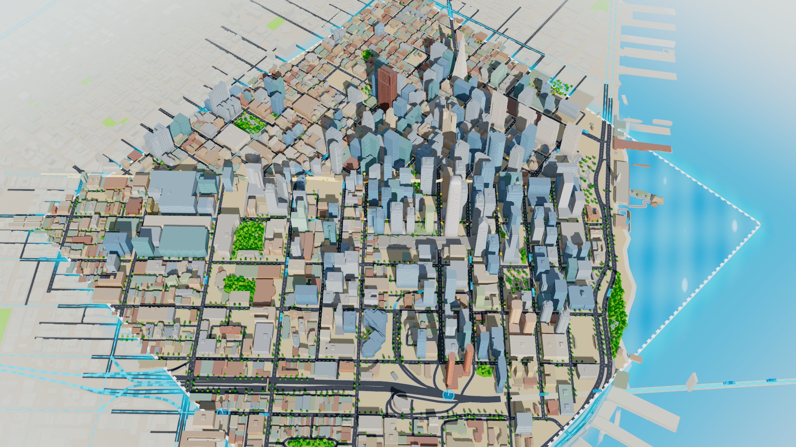
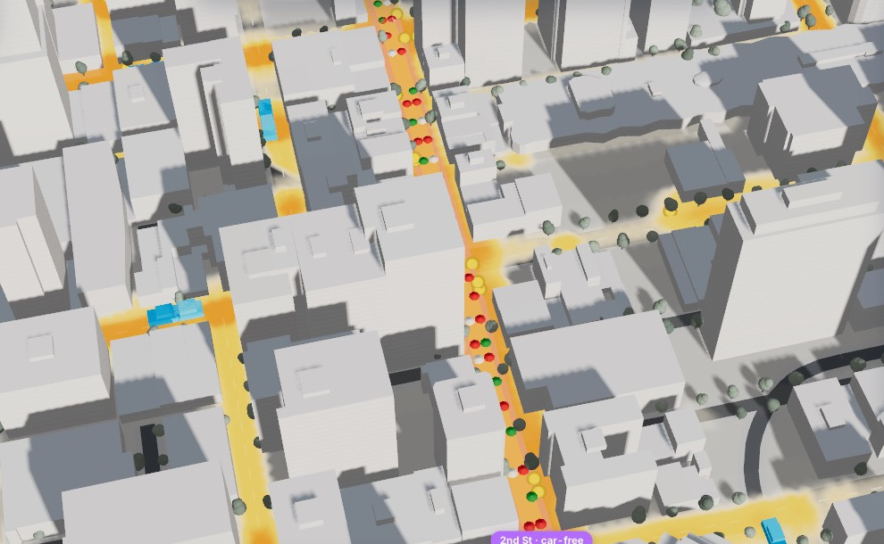
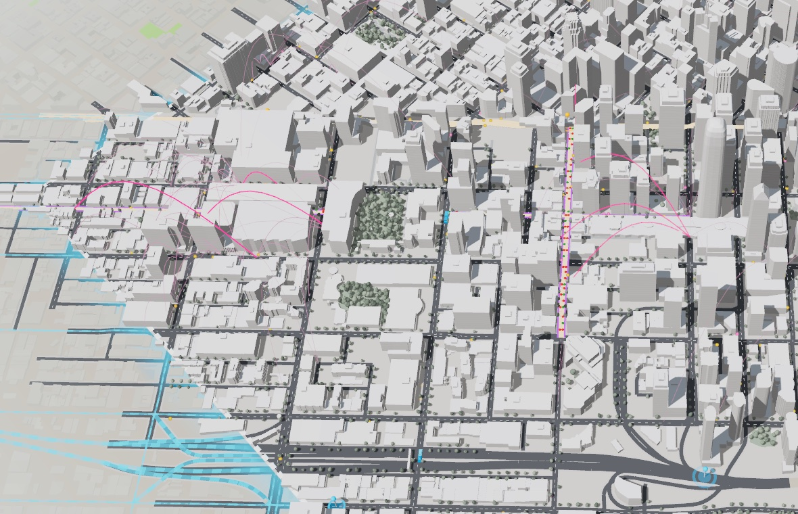
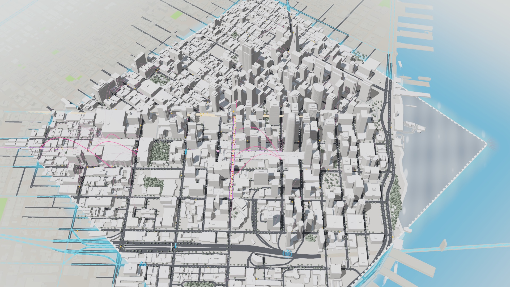

See who meets before a street changes.
A living model of downtown San Francisco: 270,942 people, one weekday, every trip. Change a street, and watch the city replan and new acquaintances form.
Aziz Derbel, Maximilian Thiersch and Phi Linh Phan, Cal Hacks 2026
In 1969 Donald Appleyard mapped who knew whom on three parallel San Francisco streets that differed mainly in traffic: Franklin, Gough and Octavia.
On the light street, residents had three times as many friends, and their ties crossed the street.
Half of US adults report loneliness. The Surgeon General compares the health risk of disconnection to smoking up to 15 cigarettes a day.
When San Francisco debates a street change today, nobody can show who would meet.
Diagram after Appleyard & Lintell (1972); friends per resident from the study. US Surgeon General advisory, 2023.
Before the SFMTA votes on a car-free block, merchants and neighbors on 2nd Street in SoMa have to decide whether to back it. They get a few minutes at the microphone and a traffic study that took months, and it says nothing about their customers or their neighbors.
Placeholder: the real quote from a merchant or neighbor you talked to goes here.
Name, role, business on 2nd Street
Built from OpenStreetMap, Census LODES and ACS, DataSF, BART station exits and Google Maps popular times collected with Apify.
Commuters pour in from the Bay Bridge, US-101 and BART.
Drag along the street. The engine replans the whole city.
Both run live, side by side, at the same moment.
One commuter's day, then every new tie across the city.
“Boost small business in SoMa without slowing Bay Bridge traffic.”
Net value, who gains, who pays and the trade-offs.

Co-presence.Two people in the same café, shop or plaza within 15 minutes notice each other.
Repetition.Regulars who keep crossing paths can become acquaintances, as proximity studies of phones and campuses found.
Calm streets.Residents of quieter streets know more neighbors, using Appleyard's numbers.
Lingering.People stay on car-free streets, so encounters happen on the street itself.
Eagle, Pentland & Lazer 2009; Hipp & Perrin 2009; Appleyard & Lintell 1972. Every rate is listed with its source in the app.

You type a goal. Claude lists streets and car inlets, runs each option through the engine and previews it on the map.
Posts and diaries written from each person's actual trips that day.
Mode choice, congestion, destination choice, co-presence and valuation for 270,942 people.
Every number comes from here.
Read-only questions, answered from engine queries in about 8 seconds. The map flies to what it mentions.
Writes, tests and hands over new levers the engine doesn't have yet.
“A $5 charge only for through-traffic,” from the Droid panel or the AI planner
Droid reads the policy interface and returns a plan: hooks, parameters, assumptions
One policy module and its test. Both paths are fixed after the plan
Static scan, pytest with the engine suite, determinism and sanity bounds
A person clicks Apply. File hashes must match what passed the gate
Hot-loaded into the Policy Book, usable in the next scenario
through_charge.py plus 21 tests. The gate passed on the first try, about 2.5 minutes end to end.
Parses the stretch, delegates, merges
Trips, delay, diversion
Revenue, winners, losers
Income tiers, ties, rent
Same edits, same edge ids, same numbers
Name only a street and the analyst asks which stretch, with a card listing the real cross streets in order.
2 FET buys a hearing brief, written only from the engine's facts, with every value line and assumption.
A scripted conversation compares the chat answer with a direct engine call, field by field. All 11 checks pass.
| Risk | What we built |
|---|---|
| A fluent story on top of a model | Claude and Droid may only quote engine numbers, and each answer lists the tool calls behind it. |
| Synthetic people carry bias | Agents are drawn from Census LODES and ACS. Results are split by income third, so the app shows who pays. |
| One dollar figure gets over-trusted | Every parameter is tagged data, literature or assumed, with its source. Costs, losers and the convergence gap stay on screen. |
| Social value is the softest number | A weak tie is valued at $1,100 a year, an assumption derived from the UK Social Value Bank, and labeled as one. |
| AI-written code in a running product | Droid works in a sandbox, behind a test gate, and nothing loads until a person approves it. |
Inputs: OpenStreetMap streets and buildings, Census LODES jobs and ACS residents, DataSF land use and traffic counts, BART station exits, and Google Maps businesses with popular times, collected with Apify.
| Check | Model | Real world | Source |
|---|---|---|---|
| Downtown commuters who drive | 35.1% | 34.4% | Census ACS |
| Downtown commuters on transit | 49.7% | 48.4% | Census ACS |
| Foot traffic on 2nd Street after it goes car-free | +24.6% | +29% | SFMTA |
| Mission St slowdown after car-free Market St (2020) | +4.8% | +4.0% | INRIX |
| Café visits by hour, correlation with Google popular times | 0.82 | 0.80 target | Google Maps via Apify |
| Where we're off: cycling on Market St after the closure | +98% | +25% | SFMTA |
Painting a street calls the set_pedestrian reducer on SpacetimeDB
Each edit bumps the plan version and arms a 400 ms timer
A scheduled procedure sends the plan to the engine
The result lands in result_summary in one transaction
Every subscriber gets the same plan, numbers and cursors
from an edit to the pushed result, for a new plan
for a plan the engine has already computed
Edits made during a compute are never lost: when the run finishes it sees the newer version and queues another. Tables: scenario, street_edit, block_edit, player, activity, result_summary.
Every number on screen comes from the engine, and every parameter is tagged by where it comes from: data, literature or an assumption.

CommonGround lets a neighborhood see who meets before the street changes.
github.com/ma-xr/calhacks-2026
Aziz Derbel, Maximilian Thiersch and Phi Linh Phan
Cal Hacks 2026